The brief
The current site is a bought template from an earlier era: a 360px photo next to two navy blocks, uppercase headings everywhere, and the navigation hidden in the footer behind a “Menu ↓” link. These proposals explore where the layout could go next. They are not production code: each one is a set of static HTML pages, generated from the same data the site uses today (_data/, src/blog/posts).
Kept
- The navy palette and its light tints
- The portrait
- All content, unchanged
- A print style for the CV
Brand primaryBrand secondaryAccentLight 300Light 100Text
Page types covered
- CV (home)
- Open Source
- Contributions
- Blog index
- Blog post
- Talks
- 404 / offline
One representative post (“15 Years as a Mozilla Volunteer”) stands in for all 40 posts, and the contributions page shows a slice of page 1.
How to look at it
- Open any page straight from disk, no build or server needed. Web fonts load from Google Fonts; production would self-host them.
- The screenshots show each proposal’s home page at 1440×900 and 390×844. Use the “Open” button to see every page.
- Try printing each proposal’s CV page.
The proposals
At a glance
| Proposal | Idea | Typography | Dark mode | Best if… |
|---|---|---|---|---|
| 01 Editorial | A personal broadsheet | Newsreader (display and text, optical sizes) + Inter for small UI labels | No, light only | writing and the CV narrative matter most and the site should feel calm and timeless. |
| 02 Profile Rail | The current header, turned on its side | Plus Jakarta Sans throughout, with tabular numbers for dates | Yes, follows the system | the site should feel like a polished, modern product profile and navigation matters. |
| 03 Bento | Everything at a glance | Bricolage Grotesque for display, Inter for text | Yes, follows the system | the home page should be a quick, friendly overview that links deeper, rather than a full CV up front. |
| 04 Terminal | A home directory on the web | JetBrains Mono throughout | Dark by design, no light theme. | the site should show developer personality first and the playful tone is welcome. |
| 05 Swiss Grid | International Typographic Style, from Bern | Inter Tight (display, 600–800) + Inter (text) | No, light only | the site should look confident and designed, with a clear point of view and a Swiss reference. |
| 06 Timeline | Two careers, one line | Sora (display) + Source Sans 3 (text) | Yes, follows the system | the long-term Mozilla commitment should stand next to the professional career, not hidden on a separate page. |
| 07 Neo-Brutalist | Thick lines, hard shadows, loud and friendly | Space Grotesk (display and text) + Space Mono (labels, dates) | No, light only | the site should feel playful and personal, and stand out from typical developer CV sites. |
| 08 Plain Text | A personal homepage, the old-fashioned way | System UI stack, with ui-monospace for dates | Yes, follows the system | the content should carry the site and maintenance should stay close to zero. |
| 09 Duotone Poster | Gig-poster energy in two shades of navy | Anton (display) + Archivo (text) | No, but half the panels are navy | the site should feel bold and graphic, and the photos should become part of the design. |
| 10 Field Notes | A notebook kept since 2008 | Atkinson Hyperlegible (text) + Caveat (handwritten notes) | No, light only | the site should feel personal and approachable, with the volunteer and community story at the front. |
| 11 Aurora Glass | Frosted panels over soft navy light, with ⌘K | Manrope (display and text) | Yes, follows the system | the site should look current and techy, and finding things quickly matters. |
| 12 Split Screen | A fixed stage on the left, the story on the right | Instrument Serif (display) + Instrument Sans (text) | Yes, follows the system | the photos and slides should carry more of the story, and each page should feel like a single focused spread. |
| 13 Editorial, photo header | Editorial on desktop, Split Screen’s photo header on mobile | Newsreader (display and text, optical sizes) + Inter for small UI labels | No, light only | writing and the CV narrative matter most and the site should feel calm and timeless. |
| 14 Poster Remix | The match-off winners, put together | Anton (display) + Archivo (interface) + Newsreader (reading) | No, but the posters are navy | The direct answer to the match-off: each component is the one you picked. |
| 15 Serif Poster | The match-off structure, set like a magazine | Newsreader (display and text) + Inter (interface) | No, it is a light, print-like design | For the match-off layout with Editorial’s calmer, more literary tone. |
| 16 Swiss Aurora | The match-off structure in a contemporary sans | Manrope (display and text) | No, but the posters are deep navy gradients | For the match-off layout with a modern, product-like finish instead of print. |
| 17 Editorial, poster header | Editorial with the Duotone Poster’s header | Newsreader (display and text) + Inter (labels) | No, but the header is navy | writing and the CV narrative matter most and the site should feel calm and timeless. |
| 18 Editorial, timeline header | Editorial with the Timeline’s header | Newsreader (display and text) + Inter (labels) | No, but the header is navy | writing and the CV narrative matter most and the site should feel calm and timeless. |
Header: a 360px photo next to two navy bars with the name and title. Content is full width with no maximum measure. The menu lives in the footer. Headings are uppercase NebulaSans Light. On mobile the photo goes full width, and the name and title get cut off.
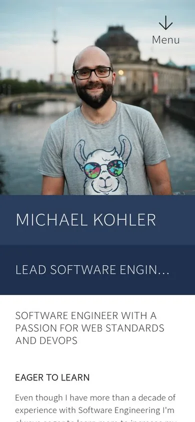
Proposal 01
Editorial
A personal broadsheet
Treats the site like a well-set magazine: a centred masthead, a serif typeface with real personality, generous margins and a strict reading measure. The CV reads like a profile piece, the blog like a column.
Open EditorialAll pages
- Masthead with a small round portrait, the name in a large serif and the navigation set in small caps below a hairline rule.
- A margin column for dates and metadata runs through every page, so the CV, the archive and the contribution log share a rhythm.
- Blog posts get a dek, byline and reading time, a 66-character measure and a drop cap. The archive is grouped by year like a printed index.
- Colour is used sparingly: navy for type and rules, the light blue tint for pull-outs. The navy band survives only in the footer.
- Typography
- Newsreader (display and text, optical sizes) + Inter for small UI labels
- Dark mode
- No, light only
- The CV has its own print stylesheet
- Fit
- Best if writing and the CV narrative matter most and the site should feel calm and timeless.

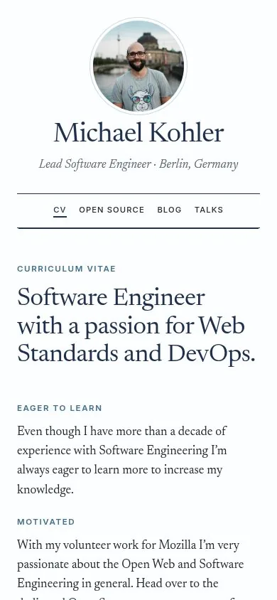
Proposal 02
Profile Rail
The current header, turned on its side
The navy header blocks of today’s site become a fixed rail on the left, holding the portrait, the name, the navigation and the social links on every page. The content sits on a calm tinted canvas in white cards, so it reads more like an app than a document.
Open Profile RailAll pages
- The identity never scrolls away, and the navigation is always one click away instead of hidden behind “Menu ↓” in the footer.
- The CV is split into scannable cards: about, personal info, skills as chips and experience as a timeline with monogram markers.
- Contributions get filter chips per source (they work: click one to filter the table) and blog posts get a sticky table of contents.
- A dark theme follows the system setting: the rail stays navy and the canvas turns to a deeper navy.
- Typography
- Plus Jakarta Sans throughout, with tabular numbers for dates
- Dark mode
- Yes, follows the system setting
- The CV has its own print stylesheet
- Fit
- Best if the site should feel like a polished, modern product profile and navigation matters.
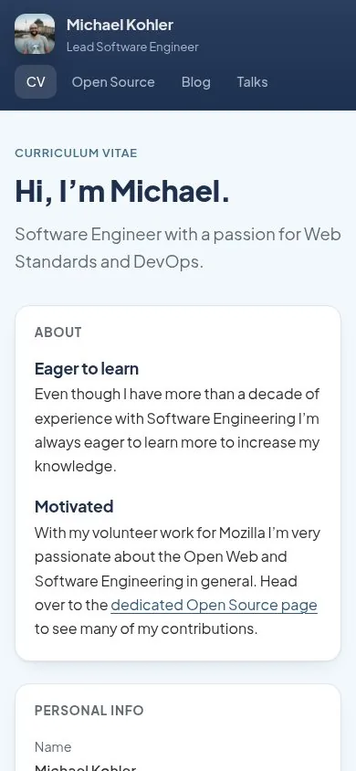
Proposal 03
Bento
Everything at a glance
The home page becomes a modular grid of rounded tiles, each one fact: the portrait, the current role, the location, eighteen years at Mozilla, contribution volume per year, the latest post and the latest talk. Inner pages reuse the same tiles, so the whole site feels like one dashboard of a life in software.
Open BentoAll pages
- The portrait gets the biggest tile, and the navy name tile next to it reuses the two-tone navy header of today’s site.
- Real numbers from the contribution data (13k+ items, a per-year bar chart, a breakdown by source) make the volunteer work tangible.
- A floating pill navigation with a mini avatar stays at the top on every page.
- Tiles collapse to one column on mobile, so order is decided once and keeps working at every size. Dark mode is included.
- Typography
- Bricolage Grotesque for display, Inter for text
- Dark mode
- Yes, follows the system setting
- The CV has its own print stylesheet
- Fit
- Best if the home page should be a quick, friendly overview that links deeper, rather than a full CV up front.
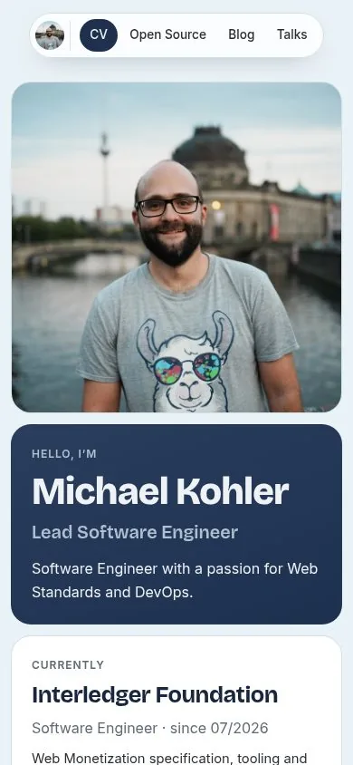
Proposal 04
Terminal
A home directory on the web
An unapologetically developer-flavoured take. The navy turns into a terminal background, everything is set in a monospace font, and every page opens with the command that would produce it: neofetch for the CV, git log for experience and contributions, ls for the blog and talks.
Open TerminalAll pages
- A tmux-style tab bar replaces the header, and a status line at the bottom shows the current path and location.
- The CV opens with a neofetch block: the avatar on the left, key facts as “Uptime”, “Shell” and “Locale” on the right, and the navy palette as colour swatches.
- Experience is drawn as a git graph, with Mozilla volunteering as a long-running parallel branch next to the jobs.
- Contribution volume is shown as a plain-text bar chart (█), and blog posts are listed like ls -l output with reading time as the “size”.
- Typography
- JetBrains Mono throughout
- Dark mode
- Dark by design, no light theme.
- The CV has its own print stylesheet
- Fit
- Best if the site should show developer personality first and the playful tone is welcome.
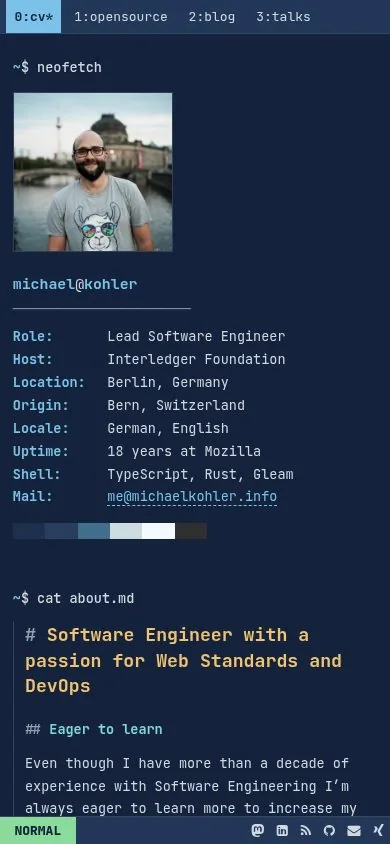
Proposal 05
Swiss Grid
International Typographic Style, from Bern
A nod to the Bern origin: a strict, visible 12-column grid, a tight grotesk in large sizes, hairline rules, numbered sections and big numerals. Navy is the only colour and appears as solid blocks, much like the header panels of today’s site, only louder.
Open Swiss GridAll pages
- The name is set huge across the grid, with the portrait in a square grid cell. The tagline sits on a full-width navy band.
- Every section is numbered (01 Experience, 02 Skills …). Years work as big numerals in the margin, which makes the timeline scannable.
- Asymmetric layouts: metadata always sits in the left columns and content starts at column 4, on every page type.
- No rounded corners, no shadows and no gradients. Hierarchy comes from size, weight and space alone, which makes for a very sharp print CV.
- Typography
- Inter Tight (display, 600–800) + Inter (text)
- Dark mode
- No, light only
- The CV has its own print stylesheet
- Fit
- Best if the site should look confident and designed, with a clear point of view and a Swiss reference.
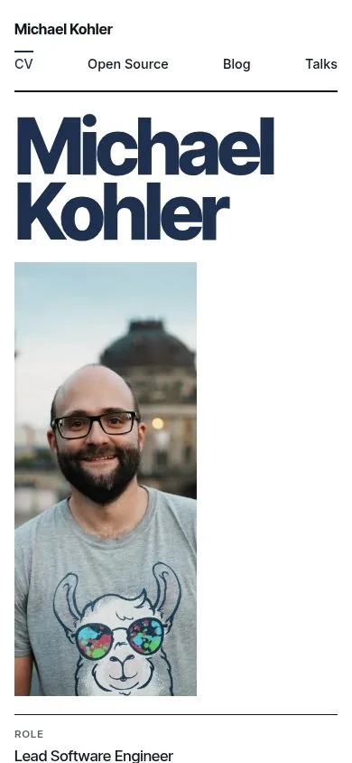
Proposal 06
Timeline
Two careers, one line
The story is told chronologically. A single vertical spine starts at the portrait and runs through every page. On the CV it splits into two lanes: paid work on one side, eighteen years of Mozilla volunteering on the other, so both careers can be read side by side, year by year.
Open TimelineAll pages
- The hero is a navy gradient with a large round portrait. The spine grows out of it and connects every section below.
- Two-lane CV: jobs on the left, community milestones on the right (Rep in 2012, Council in 2015, Common Voice in 2018, FOSDEM in 2022), plus the number of talks given each year.
- Open Source gets a small Gantt-style chart of the four areas over time. Blog posts and talks hang off the spine, grouped by year.
- Blog posts get a reading-progress bar and a table of contents drawn as a mini timeline. A dark theme is included.
- Typography
- Sora (display) + Source Sans 3 (text)
- Dark mode
- Yes, follows the system setting
- The CV has its own print stylesheet
- Fit
- Best if the long-term Mozilla commitment should stand next to the professional career, not hidden on a separate page.
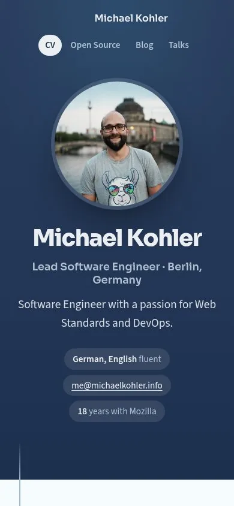
Proposal 07
Neo-Brutalist
Thick lines, hard shadows, loud and friendly
Everything sits in a box with a thick navy outline and a hard offset shadow, like stickers on a laptop lid. Type is a quirky grotesk at big sizes, the portrait is a tilted sticker, and skills, tags and sources become chunky labels. It keeps the two navy tones but uses them as flat fills instead of gradients.
Open Neo-BrutalistAll pages
- One visual rule, used everywhere: 3px navy border plus a 6px hard shadow. Hovering a link presses it down into its shadow.
- The CV opens with a “sticker sheet”: the portrait, a name plate, and the tagline as a speech-bubble card.
- Experience is a stack of index-card boxes, each with the year range as a tab sticking out at the top.
- Talks and posts are equal cards in a grid with a coloured tag strip, so the 40 talks and 40 posts feel like a collection.
- Typography
- Space Grotesk (display and text) + Space Mono (labels, dates)
- Dark mode
- No, light only
- The CV has its own print stylesheet
- Fit
- Best if the site should feel playful and personal, and stand out from typical developer CV sites.
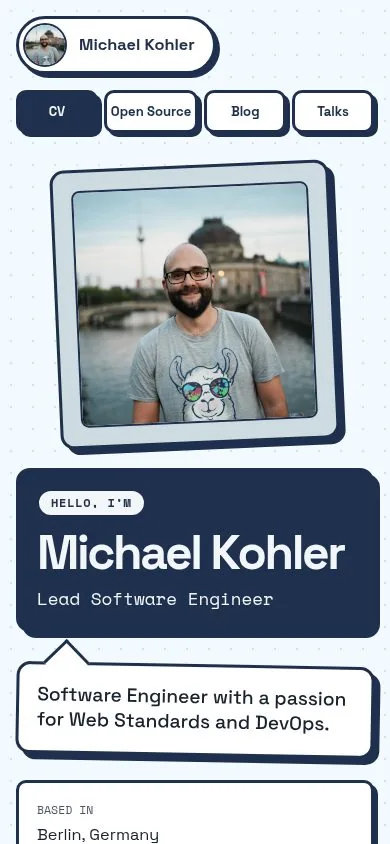
Proposal 08
Plain Text
A personal homepage, the old-fashioned way
The quietest possible version: one narrow column, system fonts, underlined links and no decoration except one navy rule and a small round portrait. Every page is a document you read from top to bottom. It loads instantly, prints perfectly and will still look right in ten years.
Open Plain TextAll pages
- No web fonts, no images in lists, no JavaScript. The pages are a few kilobytes of HTML and CSS, apart from the portrait.
- Navigation is one line of text under the name, the way personal homepages used to work, and the footer repeats it.
- Lists do all the work: experience, blog posts, talks and contributions are dated lists with tabular figures in the margin.
- Dark mode follows the system and is just a second set of five colour tokens.
- Typography
- System UI stack, with ui-monospace for dates
- Dark mode
- Yes, follows the system setting
- The CV has its own print stylesheet
- Fit
- Best if the content should carry the site and maintenance should stay close to zero.
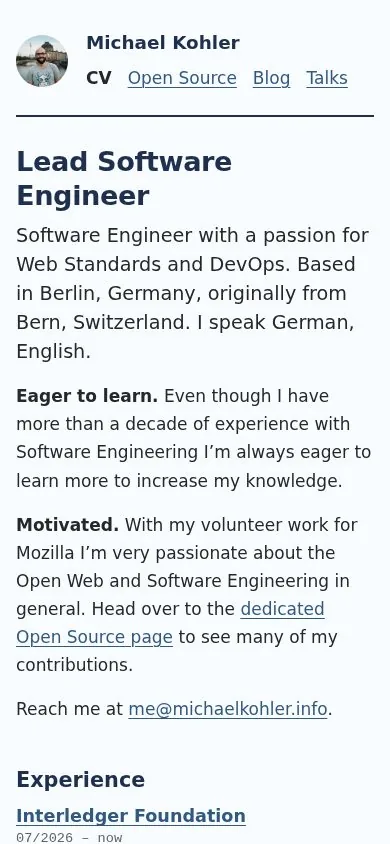
Proposal 09
Duotone Poster
Gig-poster energy in two shades of navy
Every page opens like a poster: a full-bleed navy panel, a condensed display face at enormous sizes and photos turned into navy and pale-blue duotones, so even the conference snapshots and slide thumbnails belong to one palette. Below the poster, content alternates between navy and light panels.
Open Duotone PosterAll pages
- One CSS-only duotone treatment (grayscale plus two blend layers) recolours the portrait, the area photos and all 40 talk thumbnails. Hovering a talk shows its original colours.
- The name is set across the full width, overlapping the portrait, on the CV. On every other page, a single big word (“Writing”, “On stage”, “404”) plays that role.
- Experience reads like a festival line-up: the employers are huge, stacked names, with dates and roles in small text beside them.
- Panels alternate navy and light, which gives the long CV and Open Source pages a rhythm without needing cards or boxes.
- Typography
- Anton (display) + Archivo (text)
- Dark mode
- No, but half the panels are navy
- The CV has its own print stylesheet
- Fit
- Best if the site should feel bold and graphic, and the photos should become part of the design.
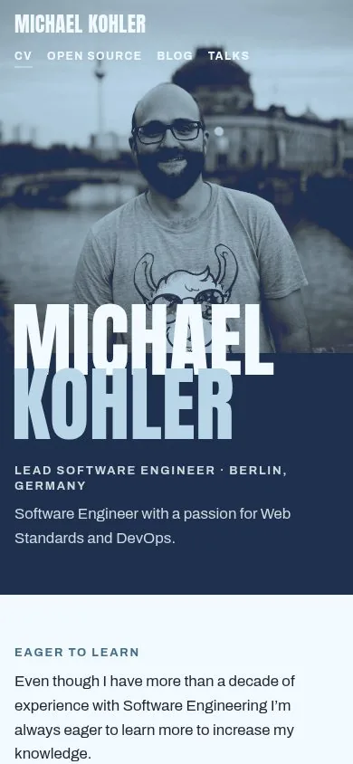
Proposal 10
Field Notes
A notebook kept since 2008
The site as a personal notebook: grid paper, a ruled margin, notebook tabs for navigation and handwritten notes in navy ink beside the printed content. The portrait and the area photos are taped-in polaroids, talks are pinned snapshots and posts are index cards. Warm and human, but the body text stays a highly legible sans.
Open Field NotesAll pages
- The navigation is a row of notebook divider tabs. The active tab joins the page below it.
- Handwriting is only used for annotations: margin dates, photo captions, a doodled arrow to the name. Everything you need to read is set in Atkinson Hyperlegible.
- A highlighter stroke marks the one key phrase per page, the way you would mark up your own notes.
- Blog posts are index cards, talks are polaroids pinned at slight angles, and the contributions log is a ruled ledger.
- Typography
- Atkinson Hyperlegible (text) + Caveat (handwritten notes)
- Dark mode
- No, light only
- The CV has its own print stylesheet
- Fit
- Best if the site should feel personal and approachable, with the volunteer and community story at the front.
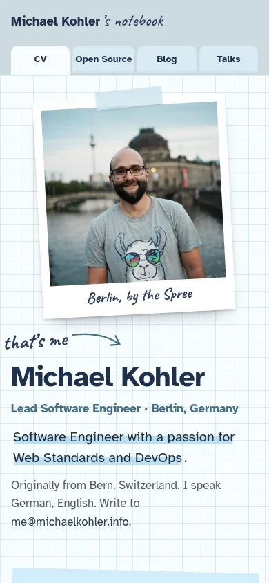
Proposal 11
Aurora Glass
Frosted panels over soft navy light, with ⌘K
A contemporary product-site look: soft blurred blobs of the navy and accent blue drift behind frosted glass panels, with a glowing ring around the portrait. Open Source becomes a small dashboard with a year-by-month heatmap of all contributions, and a working command palette (⌘K or the search button) jumps to any page, post or talk.
Open Aurora GlassAll pages
- The aurora background is just two or three large blurred radial gradients, so it costs nothing to render and works in light and dark.
- A heatmap of all 13k contributions by month shows the Mozilla years at a glance: the 2009 start, the 2015 to 2019 peak and the quieter years after.
- The command palette indexes every page, all 40 posts and all 40 talks, and it works with the keyboard only (⌘K / Ctrl+K, arrows, Enter, Esc).
- Dark mode is the showcase, with glowing aurora on deep navy. Light mode keeps the same glass over pale blue.
- Typography
- Manrope (display and text)
- Dark mode
- Yes, follows the system setting
- The CV has its own print stylesheet
- Fit
- Best if the site should look current and techy, and finding things quickly matters.
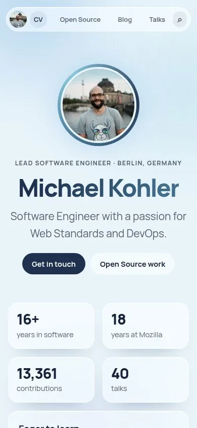
Proposal 12
Split Screen
A fixed stage on the left, the story on the right
Every page is split in two. The left half is a fixed navy stage holding the one thing that page is about: the portrait on the CV, the photo of the area you are reading about on Open Source, the slide of the talk you are pointing at, the title of the post. The right half scrolls with the content, set in a sharp serif and sans pairing.
Open Split ScreenAll pages
- The stage responds to the content: on Open Source it swaps photos as you scroll through the areas, and on Talks it previews the slide of whichever talk you hover or focus.
- The portrait finally gets real space: half the screen on the CV, with the name set over it in a large serif.
- The talks page becomes a plain, scannable list of titles, because the images live on the stage instead of in 40 cards.
- On mobile the stage becomes a header block above the content, and the hover previews are simply skipped. Dark mode is included.
- Typography
- Instrument Serif (display) + Instrument Sans (text)
- Dark mode
- Yes, follows the system setting
- The CV has its own print stylesheet
- Fit
- Best if the photos and slides should carry more of the story, and each page should feel like a single focused spread.
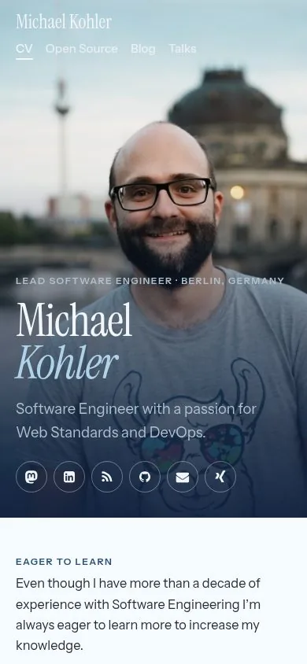
Proposal 13
Editorial, photo header
Editorial on desktop, Split Screen’s photo header on mobile
Proposal 01 unchanged on desktop and tablet. On phones the centred masthead gives way to the full-bleed header from Split Screen (12): the portrait fills the top of the screen, the navigation sits over it in white, and the name is set large in Newsreader at the bottom of the photo. Inner pages get a shorter photo band with the same treatment.
Open Editorial, photo headerAll pages
- Desktop is exactly Editorial: this proposal imports its template and stylesheet and only adds a mobile header.
- On the CV the portrait takes about three quarters of the first screen, with a navy gradient so the white name, role and social icons stay readable.
- Every other page keeps the photo as a shorter band, so the person is present on every page without pushing the content too far down.
- The mobile navigation is always visible at the top of the photo, which fixes the cramped small-caps row of the original on phones.
- Typography
- Newsreader (display and text, optical sizes) + Inter for small UI labels
- Dark mode
- No, light only
- The CV has its own print stylesheet
- Fit
- Best if writing and the CV narrative matter most and the site should feel calm and timeless.
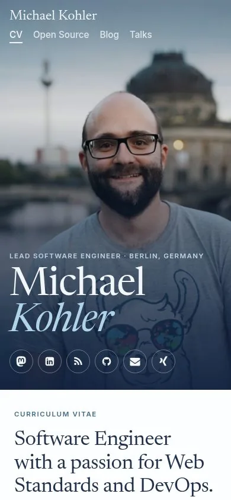
Proposal 14
Poster Remix
The match-off winners, put together
Built from the match-off results: every component is the one that won its round, redrawn so they share one system. The CV, talks and Open Source areas use the Duotone Poster (09). The top bar and footer come from Timeline (06), the experience list from Swiss Grid (05), the filtered contributions log from Profile Rail (02), the blog index from Split Screen (12), the Open Source dashboard intro from Aurora Glass (11), and reading and the mobile pages from Editorial (01 and 13).
Open Poster RemixAll pages
- Desktop CV, talks, skills and the Open Source areas are 09’s navy posters and duotone photos. 09 won 5 of the 14 rounds and had the most wins overall.
- Navy top bar with the round avatar and pill navigation (06, winner) on every page, and 06’s centred footer with the round social buttons.
- Experience in 05’s grid, with big year numerals in the margin. Open Source opens with 11’s dashboard (key numbers, monthly heatmap, sources). Contributions use 02’s working filter chips and source badges.
- The blog is 12’s split page: a sticky navy stage with the year index, and the list on the right. Posts are set like 01: Newsreader, a 66-character measure and a drop cap.
- On phones, the CV opens with 13’s full-bleed photo header and every other page uses 01’s centred masthead. These were the two mobile winners.
- Typography
- Anton (display) + Archivo (interface) + Newsreader (reading)
- Dark mode
- No, but the posters are navy
- The CV has its own print stylesheet
- Fit
- The direct answer to the match-off: each component is the one you picked.
Proposal 15
Serif Poster
The match-off structure, set like a magazine
The same winning structure as Poster Remix (14), but typeset entirely in Newsreader, the face that won reading on desktop and on phones. The posters keep their scale but turn into large serif titles with the surname in italic, as in the 13 mobile header that won. Photos stay in full colour under a navy gradient, and the page alternates between paper and a soft blue tint instead of solid navy, so it reads calmer and more literary.
Open Serif PosterAll pages
- One typeface family across the whole site: Newsreader for every heading, Inter only for labels, numbers and the navigation.
- The CV hero is 09’s layout (name across the full width, overlapping the portrait), with “Michael” set upright and “Kohler” in italic, like 13’s mobile header.
- Photos keep their colour. A navy gradient, not a duotone, keeps text readable, and the talk thumbnails stay as they are.
- Navy is kept for the hero, the blog stage, the top bar and the footer. Skills and the Open Source areas sit on a pale tint, so long pages feel lighter than in 14.
- Typography
- Newsreader (display and text) + Inter (interface)
- Dark mode
- No, it is a light, print-like design
- The CV has its own print stylesheet
- Fit
- For the match-off layout with Editorial’s calmer, more literary tone.
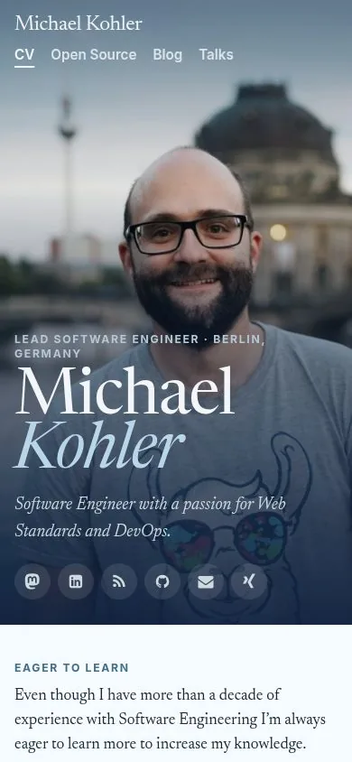
Proposal 16
Swiss Aurora
The match-off structure in a contemporary sans
The same winning structure as Poster Remix (14), but drawn with the runner-ups’ style: Aurora Glass (11) came second for the first impression and won the Open Source intro, and Swiss Grid (05) came second for the blog index and mobile reading. One geometric sans (Manrope) for everything, a strict grid with hairlines, and soft navy and blue aurora gradients instead of flat navy panels. The duotone photos stay, with rounded corners.
Open Swiss AuroraAll pages
- The navy panels from 09 become slow aurora gradients (navy into the accent blue), so the posters keep their weight but feel less like print.
- Everything is set in Manrope: an extra-bold, tightly spaced display for names and section titles, and regular weight for the body, including blog posts. This is the sans alternative to 14 and 15, which use a serif for reading.
- Cards, KPI tiles, the contributions card and the top bar are frosted glass with a hairline border, taken from 11, on a lightly tinted page.
- The structure stays the same as 14: 05’s numbered sections and year numerals, 02’s filter chips, 12’s split blog page, 06’s footer, and the 13 / 01 mobile headers.
- Typography
- Manrope (display and text)
- Dark mode
- No, but the posters are deep navy gradients
- The CV has its own print stylesheet
- Fit
- For the match-off layout with a modern, product-like finish instead of print.
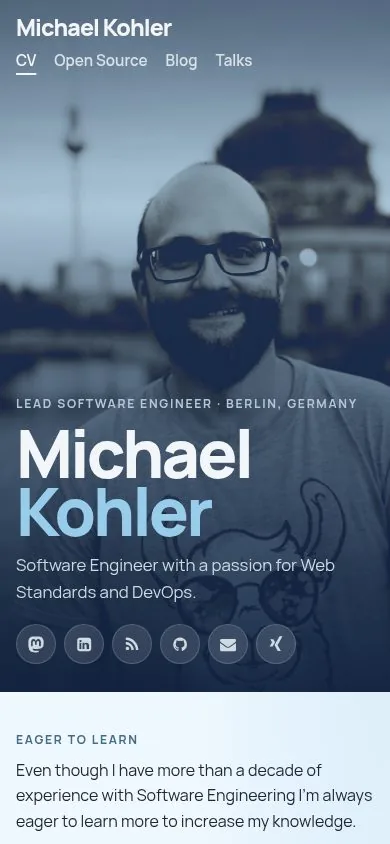
Proposal 17
Editorial, poster header
Editorial with the Duotone Poster’s header
Proposal 01 below the fold, with the header of the Duotone Poster (09) on top. The CV opens with a full-height navy poster: the duotone portrait on the right and the name set across it at poster size. Every other page gets a shorter navy band with one big word. The poster is set in Editorial’s Newsreader, with the surname in italic, and uses Editorial’s spaced small-caps navigation, so the header and the page below read as one design.
Open Editorial, poster headerAll pages
- Everything below the header is 01 unchanged: the ledes, the experience list, the archive and the reading layout. This proposal imports its template and stylesheet and only replaces the masthead.
- The header keeps 09’s structure: the name across the full width, overlapping the duotone portrait, and the role and social links below it. The type is Newsreader instead of Anton, so the poster uses the same voice as the page under it.
- Inner pages get a navy band with one word (“Open Source”, “Writing”, “On stage”, “404”), set like 09’s page posters but shorter, so 01’s lede with its sentence-long headline follows quickly.
- Open Source and the contributions log get the charts from Bento (03) and Aurora Glass (11): contributions per year as bars, per month as a heatmap and per source as horizontal bars, drawn in Editorial’s navy and type.
- On phones the poster follows 09’s mobile layout: a square duotone portrait first, then the name pulled up over its bottom edge. The navigation sits at the top in white small caps.
- Typography
- Newsreader (display and text) + Inter (labels)
- Dark mode
- No, but the header is navy
- The CV has its own print stylesheet
- Fit
- Best if writing and the CV narrative matter most and the site should feel calm and timeless.
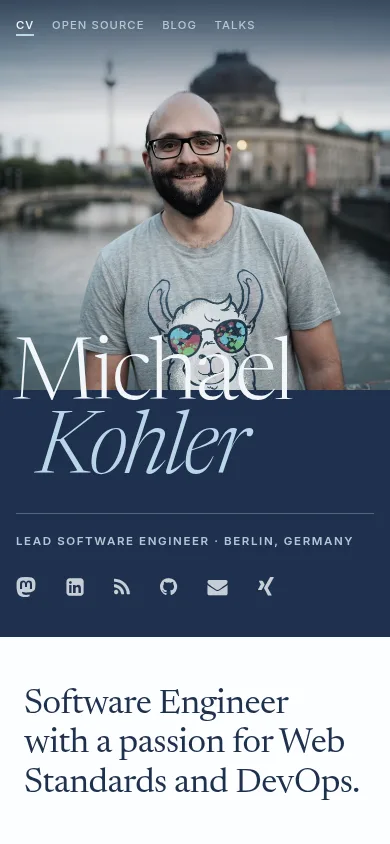
Proposal 18
Editorial, timeline header
Editorial with the Timeline’s header
Proposal 17 with the header of the Timeline (06) instead of the poster. The CV opens on a centred navy gradient: a large round portrait, the name and role, fact chips and the social links. Inner pages get the same gradient as a shorter band, aligned with the page below. The header is set in Editorial’s Newsreader and Inter small caps, so it reads as the top of the same magazine page.
Open Editorial, timeline headerAll pages
- Everything below the header is 17: Editorial’s ledes, experience list, archive and reading layout, plus the contribution charts. This proposal imports 17’s template and only replaces the header.
- The header keeps 06’s structure: a transparent top bar over a navy gradient, a centred round portrait, the name and pill-shaped facts. 06’s tagline is left out, because Editorial’s lede repeats it right below. The bold sans is swapped for Newsreader light with the surname in italic, as in 17.
- Navigation uses Editorial’s spaced small caps; the current page gets 06’s light pill. On the CV the bar holds only the navigation, so the name isn’t repeated.
- Instead of 06’s timeline spine, a short fading rule closes the header and leads into the page, since Editorial has no spine.
- Inner pages get a shorter band with a kicker and one word (“Open Source”, “Writing”, “On stage”), left-aligned with Editorial’s lede and headline below it. Only the blog post keeps it centred, like its article head.
- On phones the bar stacks, centred, with the pills below the name, and the portrait shrinks; the facts wrap into a centred column.
- Typography
- Newsreader (display and text) + Inter (labels)
- Dark mode
- No, but the header is navy
- The CV has its own print stylesheet
- Fit
- Best if writing and the CV narrative matter most and the site should feel calm and timeless.
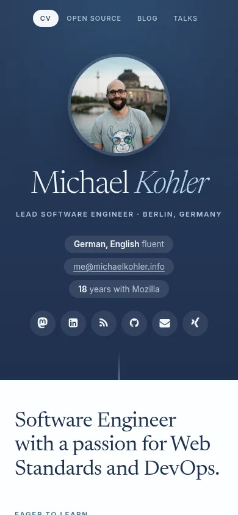